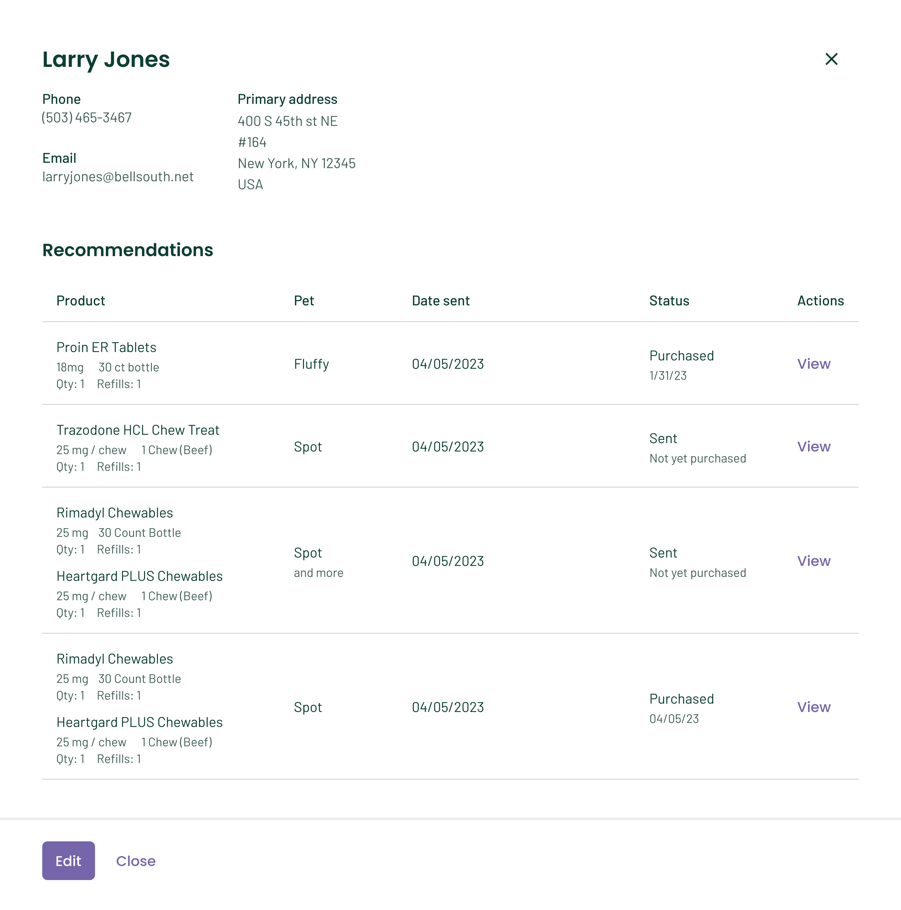
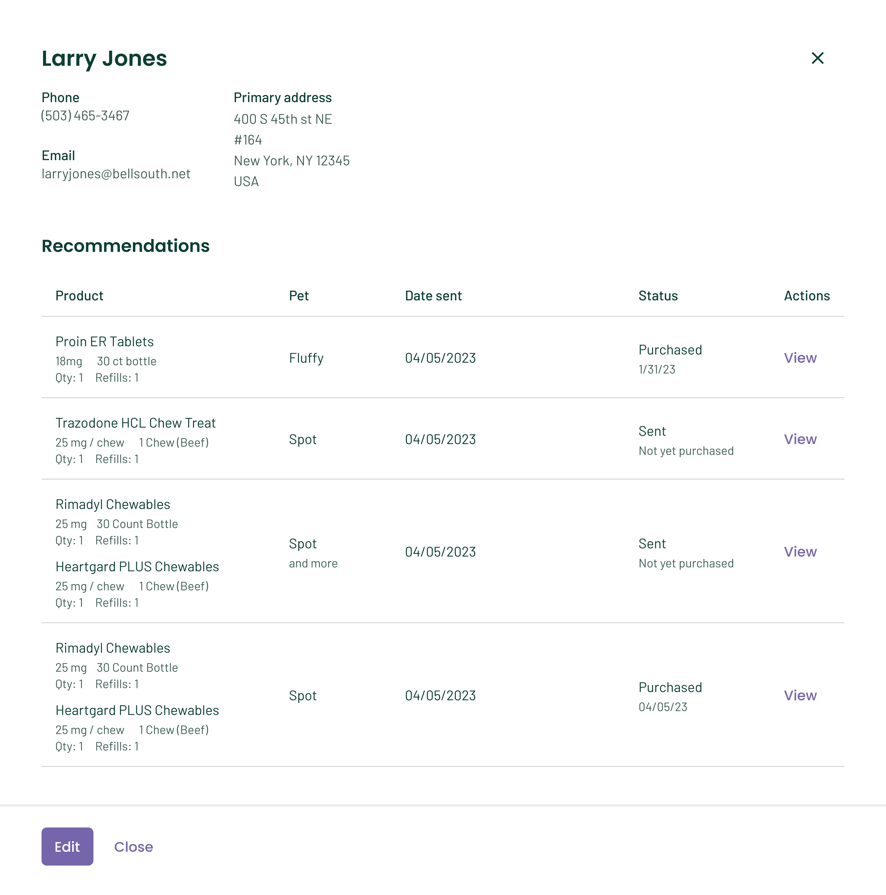

Recommendation History and Resend Capabilities
The Problem
Veterinary practices lacked visibility into the history of product recommendations sent to pet parents. Without access to past recommendations, practices were unable to determine which products had already been shared, when they were sent, or whether they had been purchased. As a result, practices often duplicated recommendations unintentionally and had no reliable way to track a client’s recommendation history. There was a clear need for a centralized view that allowed practices to see which products were recommended, when they were sent, and their purchase status.
User Research: Interviews and Moderated Testing
I conducted user interviews and facilitated moderated usability tasks with veterinary practices to evaluate feature usability and comprehension of the recommendation resend flows. Because the resend functionality was a new capability, the research focused on whether users could intuitively discover, interact with, and understand the feature - both from the practice’s workflow and the pet parent’s experience.
 

Key Findings
- It was pretty self explanatory how to re-send a recommendation, and vets liked the ability to be able to do so
- We must ensure they know whhen the recommendation was re-sent, so that date should be brought forward
- Practices wanted to know which doctor was sending the recommendation
- When re-sending multiple products, allow for each one to be sent separately with their own instructions, and allow the user to choose which ones they want to re-send
Finalized Designs for Handoff
After testing, I worked with my design team to finalize our experience for handoff. We took the feedback into consideration, and worked with engineering to ensure that the flows made sense, were usable, and able to be executed by their team. Practices have overwhelmingly positive responses to this feature.